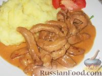

Куриный беф-строганов
4 порции по 330 ККал
Бефстроганов из курицы - очень нежный и вкусный. И быстро готовится. Готовится так же, как и бефстроганов из говядины, но меньше по времени.
46 руб.
Беф-строганов

Раньше беф-строганов был очень распространен через систему общественного питания. Но из-за качества приготовления беф-строганов часто превращался в подливу с жестким мясом.
50p.